Sur Global, principio de todo.
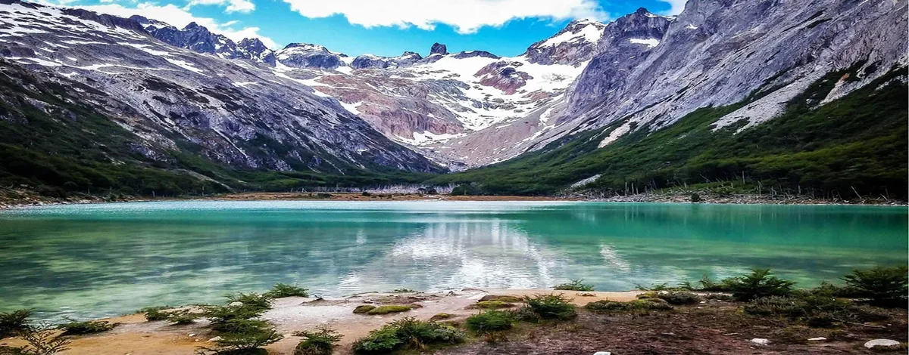
乌斯怀亚位于比格尔海峡岸边，四周群山入海，南极假山毛榉林随四季变换色彩。这里是火地岛省首府，南极探险出发港，也是一座颠覆常理的城市：在世界的尽头，生命以更强的力度跳动。
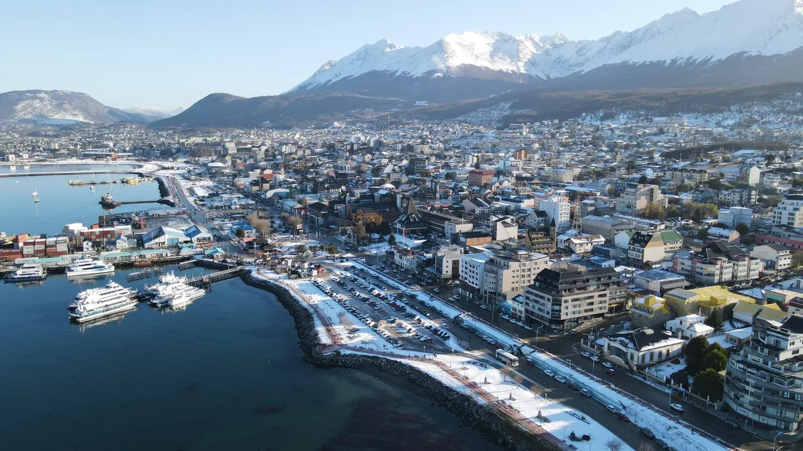
俯瞰乌斯怀亚：城市、港口与比格尔海峡，群山环抱。
雅甘人在这片海岸生活了逾7000年。他们是海峡与水道之民，驾驭树皮独木舟穿越冰冷海水，捕猎海狮、采集贝类。他们不穿衣物——以海狮油脂涂抹全身，在独木舟内生火取暖。1833年HMS贝格尔号航行期间，查尔斯·达尔文观察到他们，称其为他所见过最"悲惨"的生命。他大错特错：雅甘人对环境的适应能力超凡，雅甘语——至今仍存在——是有记录以来最复杂的语言之一。
塞尔克南人居于岛屿内陆，是手持弓箭穿行于火地岛森林与草原的原驼猎人。他们的海因（Kloketen）仪式是南美洲记录最详尽、也最神秘的仪式之一：身涂黑白图案、戴圆锥面具的人物化身为精灵，据传统说法，这些精灵统治着族中女性。奥地利民族志学家马丁·古辛德于1920年代与塞尔克南人同住并拍摄了这一仪式，后来透露那些"精灵"其实是乔装的男性——海因仪式是维系社会秩序的一场精心戏剧。古辛德也是这个濒临消亡的文化的最后外部见证者：殖民化与庄园主推动的猎杀原住民行为在数十年内几乎灭绝了塞尔克南人。
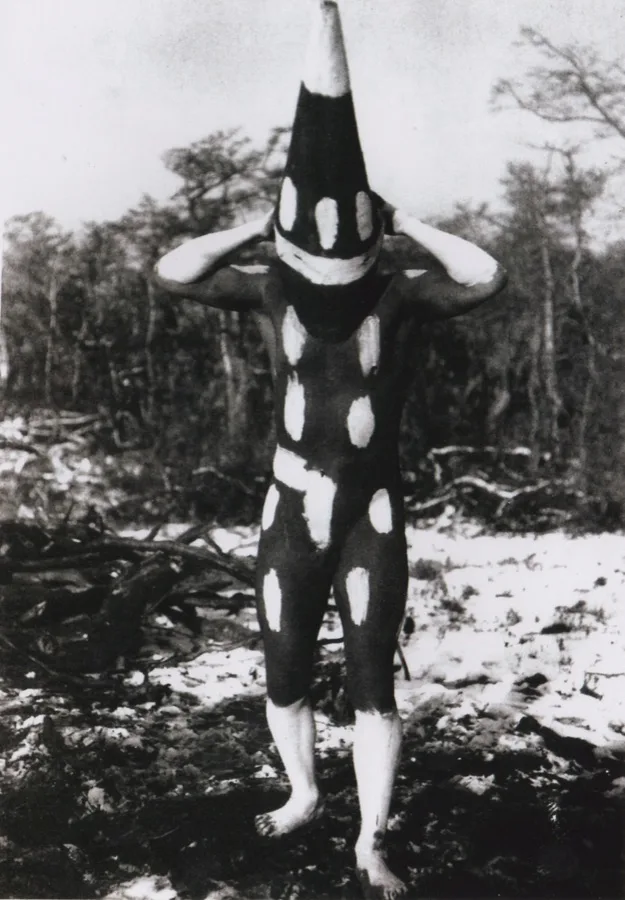
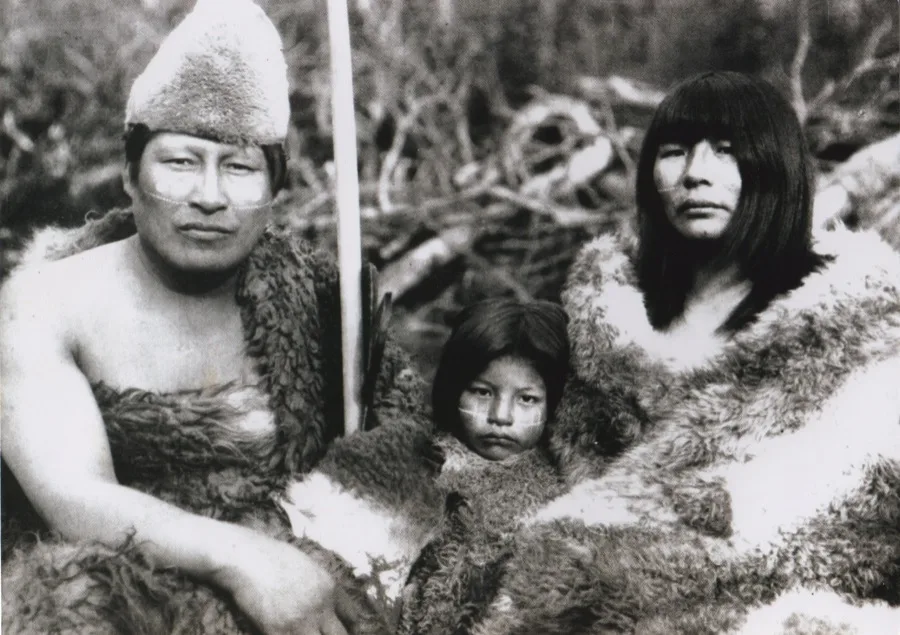
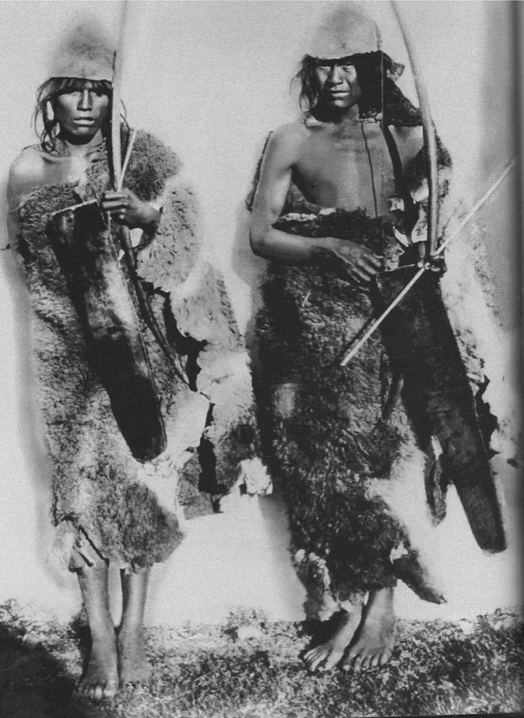
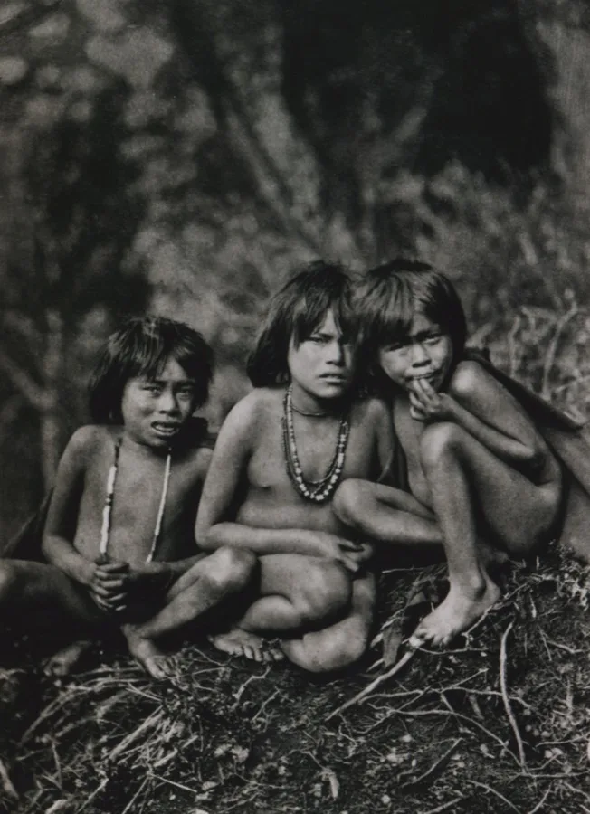
贝格尔号舰长菲茨罗伊曾在上次航行中带走三名年轻的雅甘人：约克·明斯特、富埃吉亚·巴斯克特和杰米·巴顿。他将他们引荐给乔治四世国王，教他们穿衣着物、学说英语，并以"文明化"为由将他们送回比格尔海峡。这场实验在数周内宣告失败。达尔文终身未忘这段经历——它直接影响了他关于进化论与人类物种统一性的思考。雅甘语最后一位母语使用者克里斯蒂娜·卡尔德龙于2022年2月在比格尔海峡对岸的智利普埃尔托威廉斯辞世。
建造了一座城市的监狱。1884年，科莫多罗·奥古斯托·拉塞尔正式建立乌斯怀亚。数十年后，1902至1920年间，阿根廷政府修建了这座决定地方命运的监狱：囚犯们亲手伐木、修建铁路，几乎搭起了城市的全部基础设施。监狱关押过全国最危险的罪犯。其中最著名的囚犯包括：西蒙·拉多维茨基，1909年暗杀布宜诺斯艾利斯警察局长（此人曾屠杀抗议工人）的无政府主义者，在此服刑21年后因民众压力获释；以及卡耶塔诺·桑托斯·戈迪诺，绰号"小耳朵矮子"，阿根廷首批有记录的系列杀手之一，1944年在乌斯怀亚死于狱中，从未获释。监狱于1947年关闭。许多获释囚犯和狱警留了下来定居——今日这座城市，很大程度上是由他们所建。
太阳晚上11点才落山。徒步、航行与在马尔蒂略岛观赏企鹅。旺季：需提前数月预订住宿。
卡斯托山银装素裹。城市换了面貌：游客减少、价格更低、景色焕然一新。适合追求宁静与山野的旅行者。
南极邮轮季从10月开始，港口停满科考船。南极假山毛榉林呈现秋日色彩，游客相对稀少。
从布宜诺斯艾利斯（3小时）、巴里洛切和埃尔卡拉法特有直飞航班。马尔维纳斯阿根廷纳斯机场距市中心4公里——只能乘出租车或专车，无公共巴士。
从蓬塔阿雷纳斯经智利入境：视边境口岸需6至8小时。沿途风景壮观。若已在智利巴塔哥尼亚，此为便捷选择。
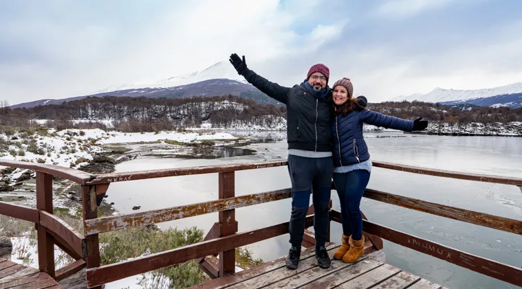
阿根廷唯一拥有海岸线的国家公园。可从城市步行抵达（8公里）或乘巴士前往。穿越南极假山毛榉与南极山毛榉林的步道沿冰川湖分布。拉帕塔亚湾位于3号国道终点，是名副其实的大陆零公里处：阿根廷的尽头。
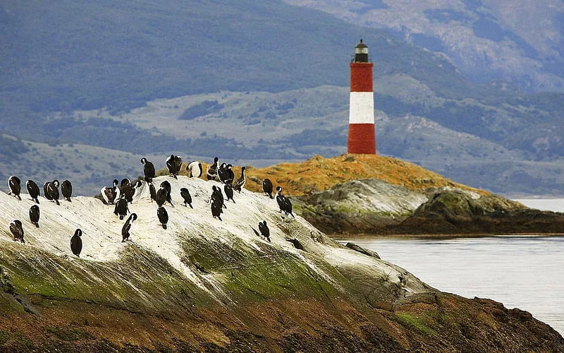
3至4小时的游览，本身便值得一游。可见岩礁上的海狮、帝企鹅鸬鹚、麦哲伦企鹅以及莱克莱尔灯塔——即所谓的"世界尽头灯塔"。前往阿博顿庄园的全程航行（含马尔蒂略岛企鹅栖息地）需花费一整天，但体验截然不同。
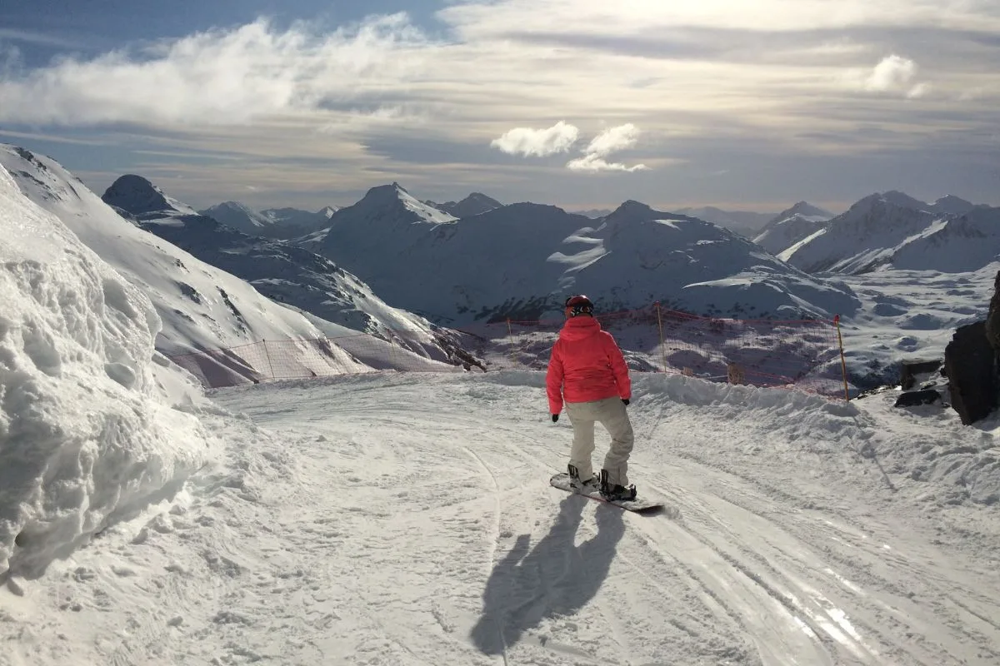
世界最南端的滑雪度假区。距乌斯怀亚26公里，设有30条雪道、缆车和滑雪公园。6月至9月积雪有保证。比巴里洛切更少人群，更具原汁原味，山顶更可俯瞰比格尔海峡。淡季时，山坡是山地自行车和徒步的绝佳场地。
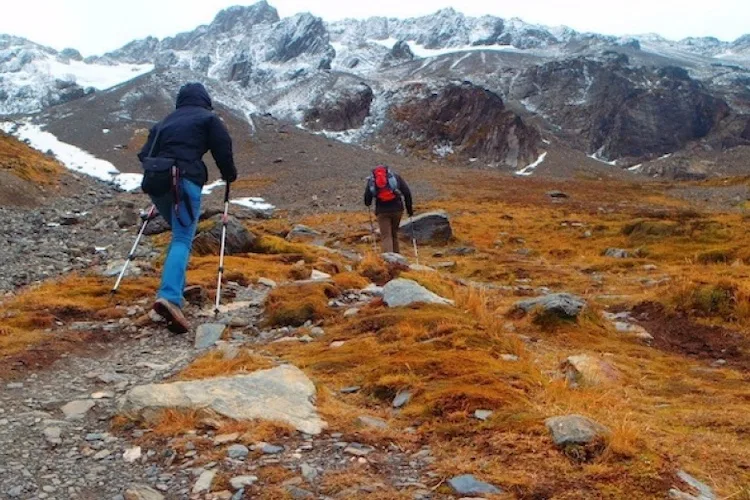
沿山路距市中心7公里。可选缆车至半山腰，再步行45分钟至冰川。景色随四季更替截然不同：秋日金草、冬日白雪、夏日野花。从山顶俯瞰乌斯怀亚与比格尔海峡的全景独一无二。即便在1月，也请备好保暖衣物。
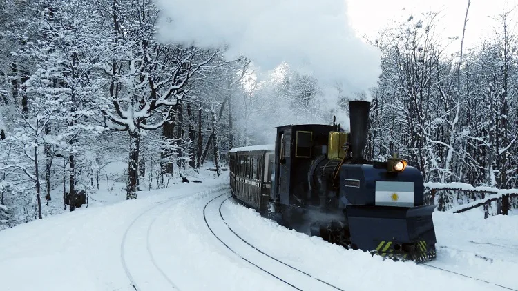
这是监狱囚犯用来从森林运送木材的铁路的复制品。从位于城市西端的世界尽头车站出发，抵达国家公园边缘。途经隧道、桥梁，还可欣赏皮波河景色。可与公园徒步相结合，让列车等候。
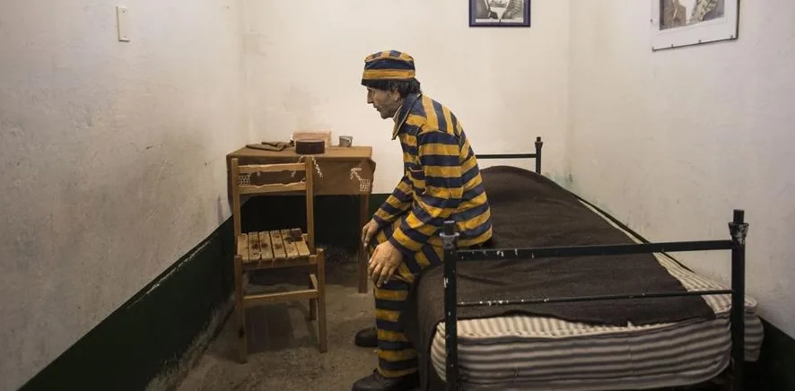
这座20世纪初由囚犯亲手修建的旧监狱，如今是巴塔哥尼亚最引人入胜的博物馆之一。它记录了那些被发配至世界尽头、最终建造了这座城市的囚徒历史。完整保存的放射状走廊与展览内容同样震撼人心。三小时转瞬即逝。
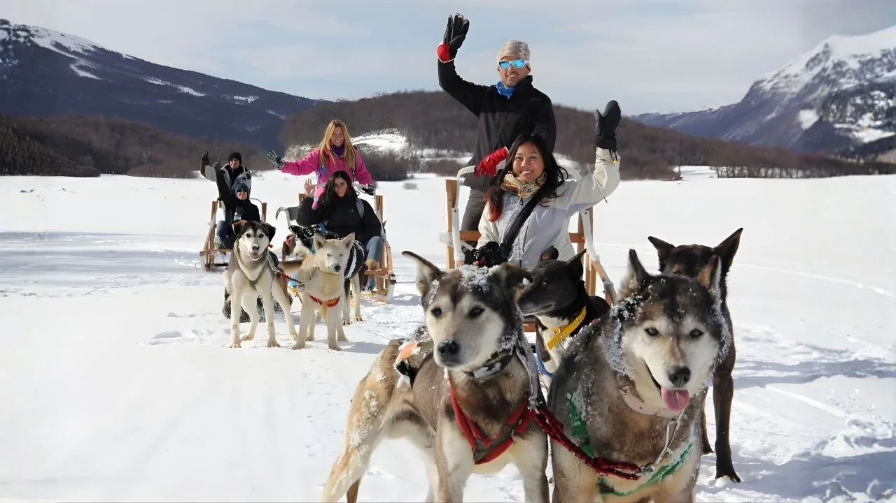
火地岛冬季最难忘的活动之一。多家运营商提供由西伯利亚哈士奇拉动的雪橇游览，穿越白雪皑皑的森林。基础版约45分钟；长版含森林小屋早餐。仅6月至8月开放，视积雪情况而定。
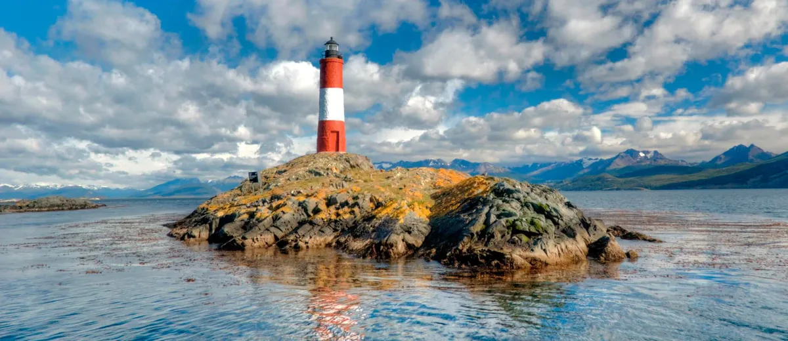
马尔蒂略岛的麦哲伦企鹅群落活跃于10月至3月。游览从阿博顿庄园出发（距乌斯怀亚80公里，沿砾石路），含向导引导的巢区步道。2020年起，南跳岩企鹅也在此筑巢——这一珍稀物种吸引欧洲鸟类学家专程前来。请携带长焦镜头。
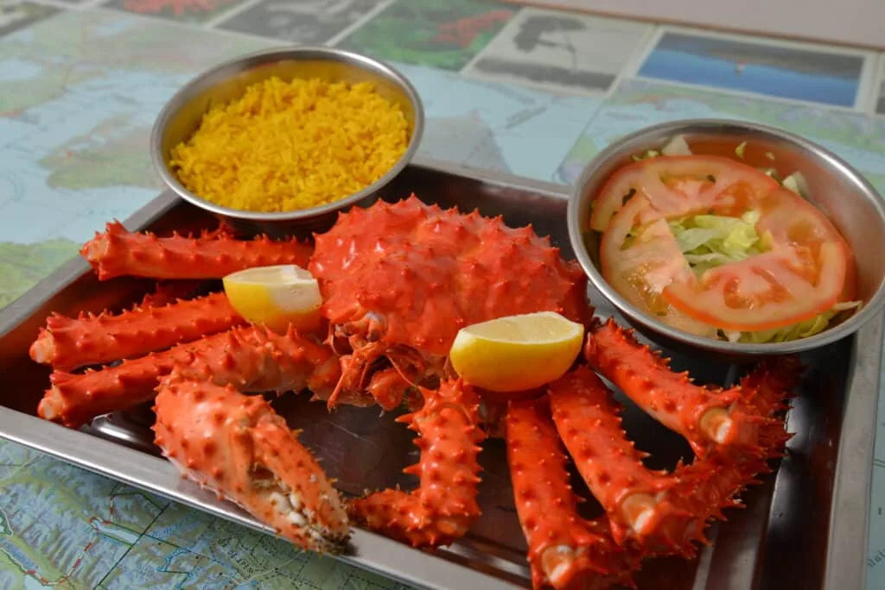
城中最精致的餐厅。法式料理融合巴塔哥尼亚食材：帝王蟹、羔羊、鳟鱼。可俯瞰比格尔海峡。旺季请提前预订。
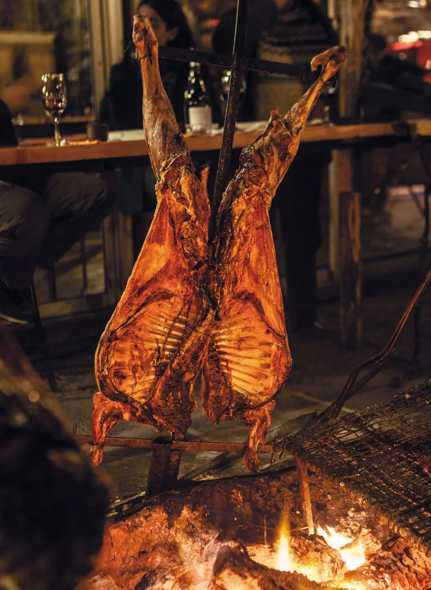
传统烤肉店，供应炭烤羔羊和牛排。无多余矫饰，火候到位，分量十足。
家常菜，价格合理。本地人常客众多。意面、炖菜与当日特餐。是任何城市中口味可靠的最佳标志。
乌斯怀亚历史悠久的三明治店。随时排队。站着吃，快速实惠，价格仅为市中心的一小部分。
巴塔哥尼亚帝王蟹（Lithodes santolla）是乌斯怀亚的标志性美食。蒸蟹腿、焗烤、馅饼或浓汤均可。价格不菲但不可错过——11月至3月旺季品质最佳。请认准火地岛原产地认证标志。